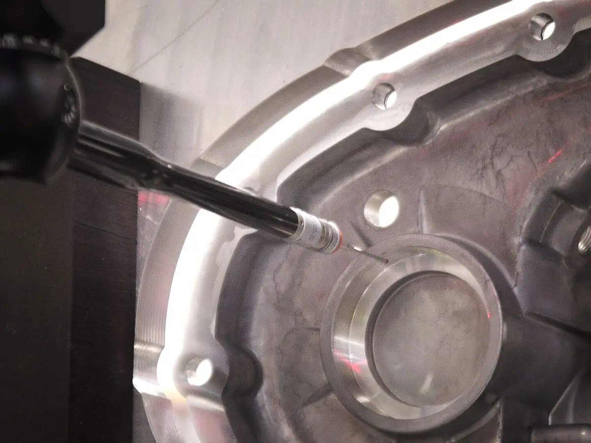
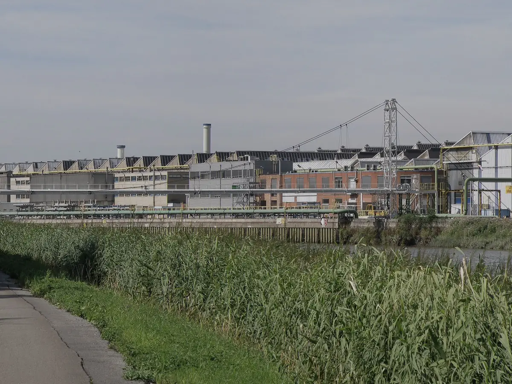

LME 註冊品牌
SBISIGMAZSM
高雄、上海、漳州三大品牌於倫敦金屬交易所註冊；1996 年成為中國第一家在 LME 註冊的再生鋁廠。
熔爐中的鋁錠｜產業示意照片，非新格實拍
鋁可無限次循環，
再生能耗不到原鋁的 5%
01產品與服務
從鋁合金錠到高溫鋁液，新格以穩定的成分控制與就近供應，成為壓鑄、澆鑄與軋製產業的材料夥伴。
02循環製造
鋁具有優越的再生性能，可多次循環而不影響使用性能。再生鋁製程短、排放少，能耗不到原鋁生產的 5%。新格把城市中的廢舊金屬，重新熔鑄為工業所需的高品質材料。
看完整製程與品質管理
全球採購網路，依 ISRI 規格購入 Tense、Taint/Tabor、Zorba 等廢鋁。
破碎、重介質浮選、磁選與脫漆，從源頭提高原料純淨度。
永磁攪拌與熱交換節能技術，每一爐檢驗成分與金相。
以合金錠或高溫鋁液交付，回到汽車、家電與工業製造。
03品質與信譽

SBISIGMAZSM
高雄、上海、漳州三大品牌於倫敦金屬交易所註冊；1996 年成為中國第一家在 LME 註冊的再生鋁廠。
中國首批循環經濟試點單位，並獲綠色工廠、高新技術企業等榮譽。
除化學成分外，同步檢驗金相、含渣量、含氣量與拉力；品管團隊並提供免費售後技術諮詢。
鑄造技術支援熔煉車間｜產業示意照片，非新格實拍
04全球據點
總部位於臺灣高雄，在浙江、重慶、山東、四川、內蒙古與河南設立規模化熔煉廠，並於美國、日本設有貿易據點，建構橫跨三大洲的採購與供應網路。
05永續循環

2017 年成立環保科技事業部，以自主研發的無害化工藝處理鋁灰，除氟效率大於 99.99%，並轉化為無機人造石、PC 磚與耐火澆注料，朝製程「零排放」邁進。
了解永續循環告訴我們合金牌號、供應形式與月需求量，業務團隊將與您聯繫。